DHCP · quatro tarefas interativas
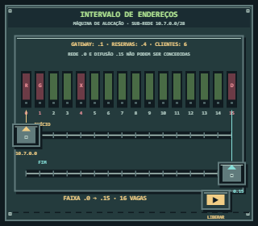
Intervalo de endereços · inicial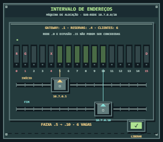
Intervalo de endereços · em operação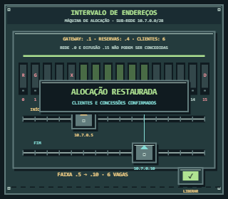
Intervalo de endereços · concluído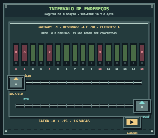
Intervalo de endereços · inicial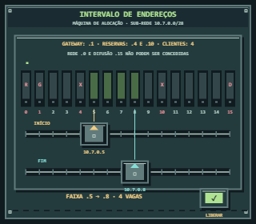
Intervalo de endereços · em operação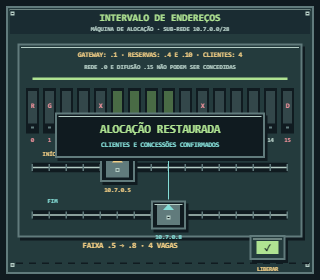
Intervalo de endereços · concluído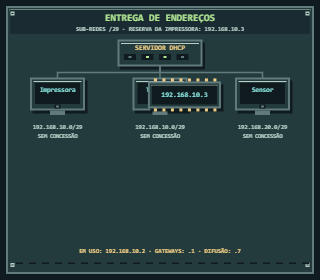
Entrega de endereços · inicial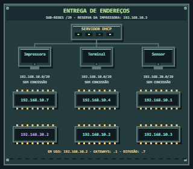
Entrega de endereços - chips emitidos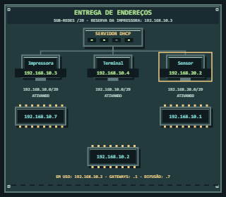
Entrega de endereços · em operação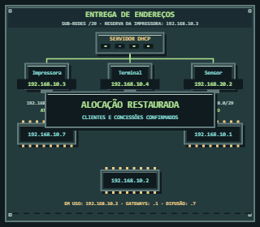
Entrega de endereços · concluído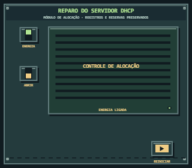
Reparo do servidor DHCP · inicial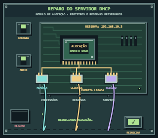
Reparo do servidor DHCP · em operação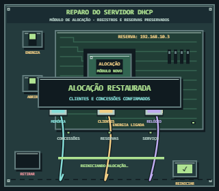
Reparo do servidor DHCP · concluído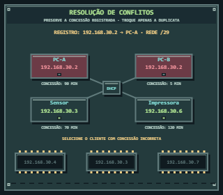
Resolução de conflitos · inicial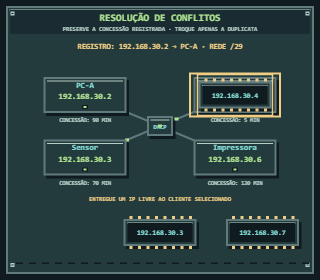
Resolução de conflitos · em operação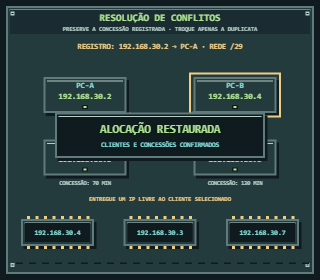
Resolução de conflitos · concluído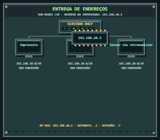
Entrega de endereços · inicial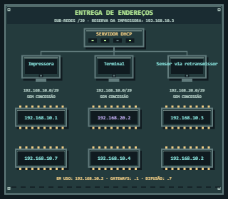
Entrega de endereços - chips emitidos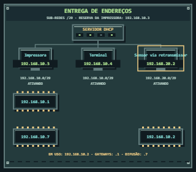
Entrega de endereços · em operação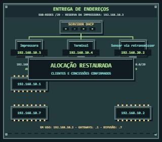
Entrega de endereços · concluído